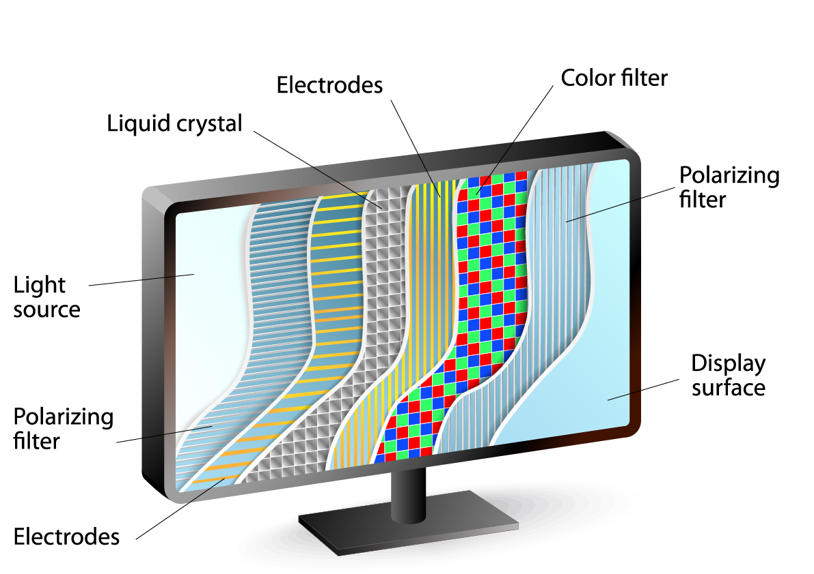
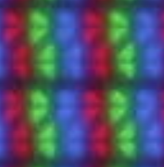
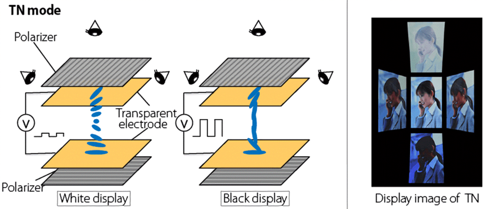
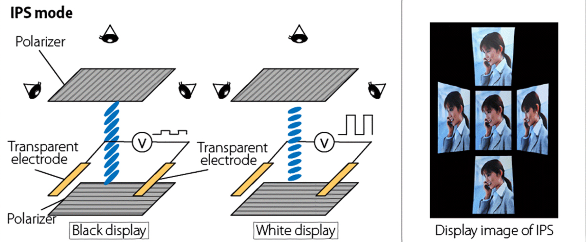

AKO FUNGUJÚ LCD DISPLEJE
TEKUTÉ KRYŠTÁLY
Na základnej škole na hodinách fyziky sme sa stretli s tromi skupenstvami, pevné, kvapalné, a plynné. Na strednej škole k týmto informáciám pribudlo štvrté skupenstvo plazma, a rovnako aj informácia, že na zmenu skupenstva musí látka prijať alebo odovzdať energiu.
Technológia LCD je zložená na premene skupenstva látky a jej predvídateľnom správaní sa, pri prijímaní a odovzdávaní energie. V LCD displejoch sa používajú kryštály, konkrétnejšie Liquid crystals (tekuté kryštály). Svoje pomenovanie majú preto, pretože od premeny do kvapalného skupenstva nemajú ďaleko. Toto je veľmi ideálny stav, pretože tieto kryštály reagujú na elektrický prúd.
TN, veľmi známy druh displejov, svoje pomenovanie nenesie len tak pre nič za nič. TN je označenie pre špecifický druh kryštálov, ktoré sa používajú v LCD displejoch. TN (twisted nematics) v preklade skrútené nématické (kryštály), sú prirodzene skrútené. Tento fakt sa využíva na ovplyvňovanie polarizovaného svetla. Stav tohto kryštálu reaguje na elektrickú prúd a jeho napätie, čo znamená, že ho vieme regulovať podľa vlastných predstáv.

NA FUNGOVANIE LCD DISPLEJA VŠAK SAMOTNÉ KRYŠTÁLY NESTAČIA
Podstatným prvkom LCD displejov sú polarizačné vrstvy, ktoré určujú či a koľko svetla bude prepusteného ďalej. Prvá vrstva polarizuje samotné svetlo, následne toto svetlo prejde kryštálmi, kde môže zmeniť jeho polarizáciu v závislosti od toho ako sú kryštály nastavené. A následne smeruje do druhej polarizačnej vrstvy, ktorá „rozhodne“ či svetlo prepustí ďalej a v akej miere.
Preto na zloženie LCD displeja sa využívajúj nasledovné vlastnosti. Svetlo vieme polarizovať, „tekuté Kryštály“ vedia prenášať a zmeniť polarizované svetlo a už vyššie spomínaný fakt, že tekuté kryštály reagujú na zmeny elektrického prúdu, čiže ich vieme s pomocou energie regulovať.

Pre vytvorenie LCD displeja potrebujeme 2 vrstvy polarizovaného skla, sklo s polarizačným obalom, elektródu anódu nasledovanú vrstvou s „tekutými kryštálmi“ a následne katódou.
Dozadu pridáme zrkadlo aby odrážalo všetko dopredu a následne na prednú stranu pridáme ochranné sklo.
Takýto lcd displej potrebuje externý zdroj svetla, nakoľko iba odráža svetlo, keďže kryštály nevytvárajú svetlo ale vedia regulovať jeho priepustnosť.
V praxi sa používajú displeje s podsvietením, čo znamená že za takýmto displejom je namiesto zrkadla umiestnená vrstva s osvetlením. Vyžarované svetlo následne prejde vrstvou ktorá je ovplyvnená elektrickým prúdom a určuje ktoré časti majú byť viditeľné a v akej intenzite a ktoré nie.
Toto bol jednoduchý príklad LCD displeja vhodného na zobrazovanie podobných alebo rovnakých informácii ako sú informačné tabule na vlakovej stanici alebo jednoduché digitálne hodiny, či displej na kalkulačke.
FAREBNÝ LCD DISPLEJ
Rovnako ako väčšina displejov LCD displej využíva RGB model pre zobrazovanie farebných „obrázkov“. Každý pixel je zložený z 3 podpixelov ktoré majú farebné filtre červenej, zelenej a modrej farby. Regulovaním elektrického napätia vieme regulovať koľko svetla má prechádzať cez jednotlivé podpixely a tým pádom vieme zobrazovať rôzne farby.

Významnými zástupcami LCD technológií vo svete sú TN (twisted nematics), IPS (in-plane switching) a VA (vertical alignment) display. Každá z týchto technológií má svoje výhody aj nevýhody, preto je veľmi podstatné na čo konkrétne sa daný displej bude používať.
TN TECHNOLÓGIA
Lcd technológia TN ponúka množstvo výhod, avšak s výhodami prichádzajú aj nevýhody. Výraznou výhodou TN displejov je krátka odozva, čiže sú veľmi obľúbené u hráčov, taktiež ponúkajú možnosť vyššej obnovovacej frekvencie ako je tomu u ostatných druhov lcd displejov. Ďalšou výraznou výhodou je nízka cena. LCD displeje s technológiu TN sú momentálne najlacnejšie na trhu.
Výraznou nevýhodou TN displejov sú pozorovacie uhly. Možno to vidieť najmä na väčších displejoch pri väčšej zobrazovacej ploche. Bežne sa v špecifikáciách uvádzajú hodnotu pozorovacích uhlov až 170 stupňov, avšak zhoršenie obrazu vidieť už pri výrazne menšej odchýlke.
Pri porovnaní s ostatnými druhmi LCD displejov TN displej neponúka až také vysoké hodnoty kontrastu. Ostatné LCD technológie sú na tom oveľa lepšie.

VA TECHNOLÓGIA
Verticall allignment technológia rovnako ako TN používa „tekuté kryštáli“ na regulovanie priepustnosti svetla. Avšak oproti TN technológii ponúka výrazne lepší kontrast. Funguje na veľmi podobnom princípe ako TN s rozdielom usporiadania a orientácie svojich kryštálov.
VA technológia sa odlišuje od TN veľmi výrazne vo vlastnostiach, avšak princíp fungovania majú veľmi podobný. Ako naznačuje názov, tak táto technológia používa vertikálne usporiadané kryštály, ktoré sa naklonia keď sa aplikuje elektrický prúd, aby mohli prepúšťať svetlo.

IPS TECHNOLÓGIA
In Plane switching technológia je podobná VA avšak VA efektívnejšie blokuje svetlo. Rovnako ako ostatné LCD technológie aj IPS používa elektrický prúd na kontrolu orientácie kryštálov.
IPS technológia funguje na podobnom princípe ako TN s rozdielom, že polarizačné vrstvy majú rovnaký smer a na zmenu orientácie kryštálu sa využívajú 2 elektródy umiestnené na rovnakej vrstve, ktoré majú smer rovnaký ako orientácia polarizačného filtra.
IPS displeje sa vyznačujú excelentnými pozorovacími uhlami a najlepšími farbami. Avšak nesú so sebou aj viacero nevýhod. Vyšší čas odozvy, takže nie sú úplne najvhodnejšie pre hráčov. Rovnako nedisponujú ani vysokou obnovovacou frekvenciou. Spomedzi LCD rodinu displejov patria medzi najdrahšie displeje, čo je najmä kvôli komplikovanejšiemu výrobnému procesu.

POROVNANIE
|
TN |
VA |
IPS |
| VÝROBNÝ PROCES |
Najjednoduchší v porovnaní s ostatnými |
Komplikovanejší ako TN |
Komplikovaný proces výrob |
| CENA |
Nižšia cena |
Cena sa pohybuje o čosi vyššie ako TN |
Najdrahšie typy LCD displejov |
| POZOROVACIE UHLY |
Veľmi slabé pozorovacie uhly |
Výrazne lepšie pozorovacie uhly v porovnaní s TN |
Najlepšie pozorovacie uhly s rodiny LCD displejov |
| KONTRAST |
Okolo 1000:1 |
Môže byť až 5000:1 |
Okolo 1000:1 |
| OBNOVOVACIA FREKVENCIA |
Možné až 240hz |
O niečo nižšie hodnoty pohybujúce sa okolo 140hz |
O niečo nižšie hodnoty pohybujúce sa okolo 140hz |
| REAKČNÝ ČAS |
1-3 ms |
8-10 ms |
5-7 ms |